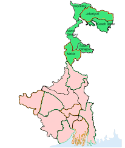

North Bengal can be broadly divided in three sections. They can be classified as the hills including Darjeeling, Kalimpong, Kurseong and Mirik, the plains of Cooch Behar and Malda and the last section is the Terai region consisting of Dooars which is the stretch from of the foothills of Himalaya. We are based in Siliguri in the district of Darjeeling. Siliguri is the gateway to the whole of northeast India and includes seven state four neighboring countries. Nepal, Bangladesh, Bhutan, Tibet, and China have their International trading route through Siliguri. Ideally located and well connected by (Bagdogra International Airport (IXB), Railways with New Jalpaiguri Station (NJP) and Siliguri Town Station and by Roadways Tenzing Norgay Bus Terminus. National Highway number 31 passes through this town and it is further branched to Darjeeling as national highway number 55, Sikkim and Kalimpong is connected vide national highway number 31 A, Dooars and Guwahati by national highway number 31. The main reason for its growth is its strategic location. Tea, Tourism, Timber, Table Tennis, Transport and Trading might be the possible reason for the growth of Siliguri. Hill stations are all two to 4 hours drive from Siliguri and the wildlife in north Bengal is worth visiting. There are at least half a dozen national park and sanctuary in any of the stretches passing through Siliguri.
The North Zone cricket team in Bangladesh is a first-class cricket team that represents northern Bangladesh (Rajshahi and Rangpur) in the Bangladesh Cricket League.
- What is North Bengal famous for?
The geographical diversity blended with the cultures of different ethnic groups has placed North Bengal in the most treasured tourist destinations in Northeast India.
.jpg )
West Bengal ( Bengali: Poshchim Bongo, pronounced [(listen), abbr. WB) is a state in the eastern region of India along the Bay of Bengal. With over 91 million inhabitants, it is the fourth-most populous state and the fourteenth-largest state by area in India. Covering an area of 88,752 km2 (34,267 sq mi), it is also the eighth-most populous country subdivision of the world. Part of the Bengal region of the Indian subcontinent, it borders Bangladesh in the east, and Nepal and Bhutan in the north. It also borders the Indian states of Odisha, Jharkhand, Bihar, Sikkim and Assam. The state capital is Kolkata, the third-largest metropolis, and seventh largest city by population in India. West Bengal includes the Darjeeling Himalayan hill region, the Ganges delta, the Rarh region, the coastal Sundarbans and the Bay of Bengal. The state's main ethnic group are the Bengalis, with the Bengali Hindus forming the demographic majority. The area's early history featured a succession of Indian empires, internal squabbling, and a tussle between Hinduism and Buddhism for dominance.